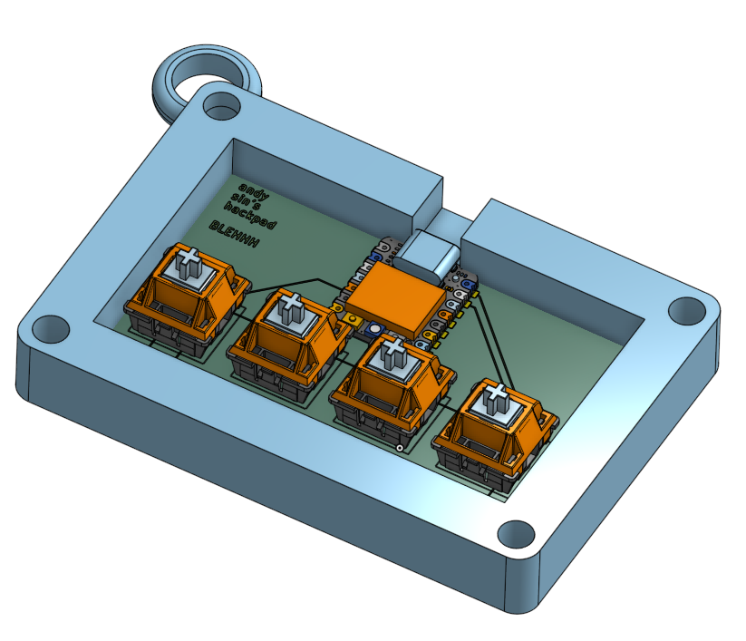
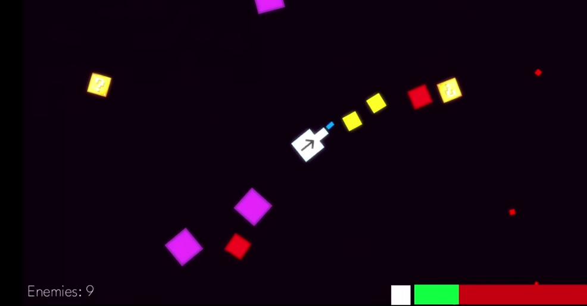
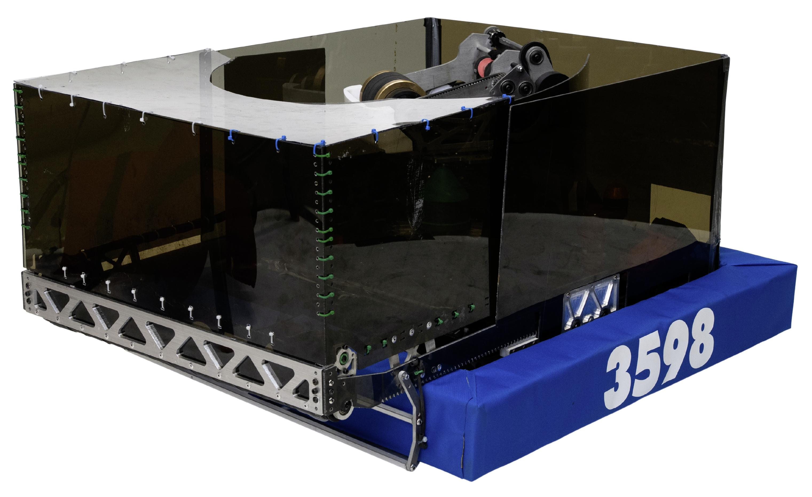

hack4impact StarterPack
A responsive five-page portfolio made with semantic HTML and CSS. Built through the Hack4Impact Starter Pack and designed to grow with my experience.
HTML · CSS · Flexbox · GitHub Pages
I like building at the intersection of code, hardware, and the people who use it. Here are a few things I have made and helped lead.
hack4impact StarterPack
A responsive five-page portfolio made with semantic HTML and CSS. Built through the Hack4Impact Starter Pack and designed to grow with my experience.
HTML · CSS · Flexbox · GitHub Pages

SinnerPad
A four-key digital-art macropad designed and built in one day as my first self-directed hardware project. I made the PCB in KiCad, designed a two-piece enclosure in Onshape, then soldered and tested every part.
KiCad · RP2040 · KMK · SK6812MINI-E · Onshape

Shiba Arcade Game & Custom Cabinet
A fixed-turret wave shooter built in Godot with GDScript, randomized gameplay, upgrades, and original art/audio. I also built, painted, wired, and soldered a Raspberry Pi arcade cabinet for public play. The project placed in the top 30 of 8,000+ participants in Hack Club's international Shiba challenge.
Godot · GDScript · Raspberry Pi 4 · Electronics

FRC Team 3598 Robot Software
As lead programmer, I helped migrate the SEStematic Eliminators from LabVIEW to command-based Java. The robot software included swerve drive, AprilTag vision fusion, autonomous path planning, and auto-aiming systems.
Java · WPILib · Limelight · AprilTags · PathPlanner
More work and code: github.com/sinismylastname